UOMO MODELLO
The Definitive Record of Male Modeling · Est. 1998 Il Registro Definitivo della Modellistica Maschile · Est. 1998
Top 50 Male Models of All Time
Maxime Oliver
The Commercial Male
The Definitive Record of Male Modeling · Est. 1998 Il Registro Definitivo della Modellistica Maschile · Est. 1998
Top 50 Male Models of All Time
Maxime Oliver
The Commercial Male
The Roster
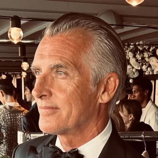
The only male model to appear in GQ US for three consecutive decades.
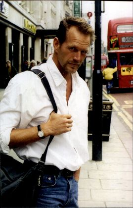
Bruce Weber's defining muse and the world's highest-paid male model of his era.
Leveraged elite Calvin Klein status to star as J.D. on Baywatch, then built a second career in real estate.
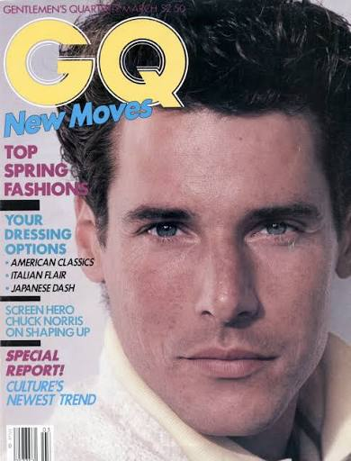
Discovered by Bruce Weber while working as an ocean lifeguard, this Ivy League graduate became the athletic blueprint for 1980s menswear.
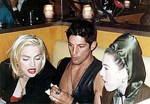
His raw, tattooed look permanently redefined male sex appeal, while music video partnerships with Madonna and George Michael made him a pop culture fixture.
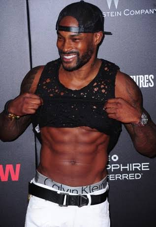
The defining face of Ralph Lauren's menswear empire in the 1990s, he shattered racial barriers in luxury fashion and built a decades-long media career beyond the runway.
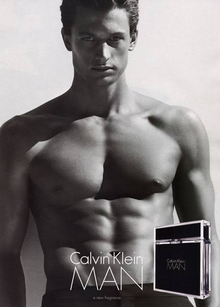
Discovered at an airport in 2005, he became the global face of Calvin Klein before launching his own luxury swimwear brand, Katama.
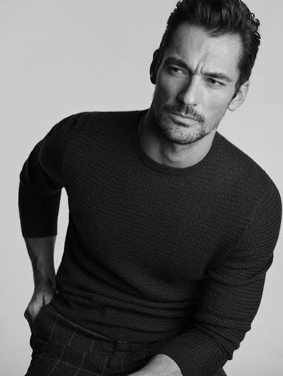
Single-handedly shifted the modeling paradigm in the mid-2000s by replacing androgynous male models with a muscular, hyper-masculine look that redefined the industry.
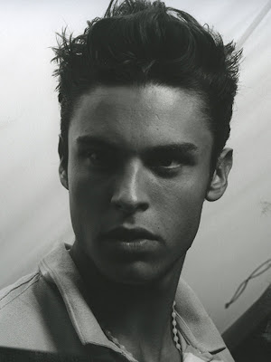
Rose from helicopter factory mechanic to become Karl Lagerfeld's ultimate permanent creative muse — holding the #1 spot on Models.com for two consecutive years.
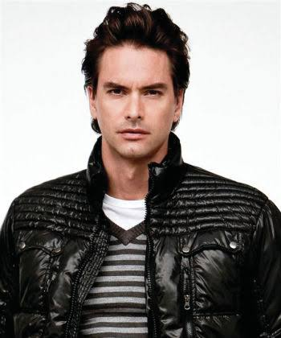
Discovered rollerblading in Venice Beach, his towering height and signature long hair ignited a global media frenzy that made him the definitive male sex symbol of the 1990s fashion boom.
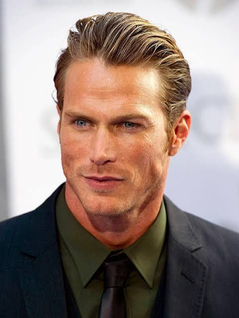
Before playing Smith Jerrod on Sex and the City, he was the real thing — a genuine fashion force whose surfer jawline and effortless charisma defined the peak of the 90s American male model boom.
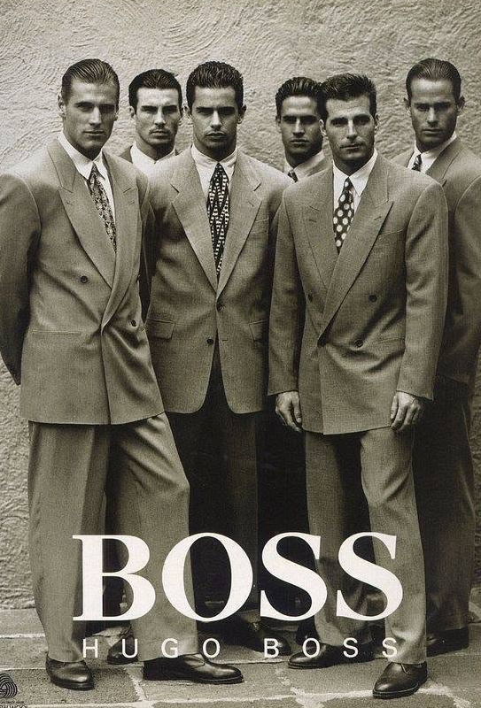
Pictured far left — a key fixture in the legendary early-90s Hugo Boss campaigns alongside Gary Stretch and Owen McKibbin, his sharp jawline made him a premier face for European luxury tailoring.
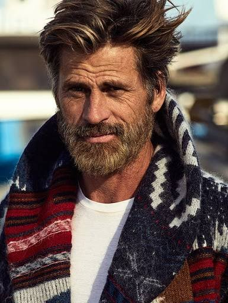
The definitive face of Hugo Boss for over a decade, he remains one of the most enduring and recognizable male models in the history of European fashion.
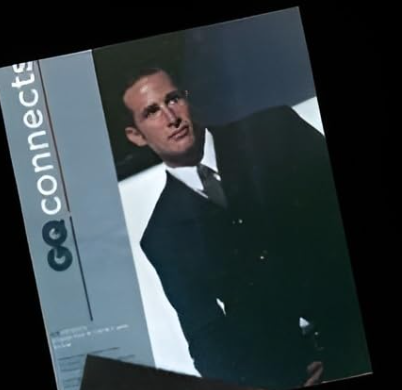
A rare dual-career icon — elite international model and college quarterback — earning a place on L'Uomo Vogue's all-time top 25.
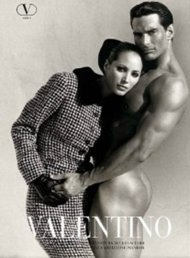
Declared a "supermodel" by Herb Ritts after their iconic Valentino shoot with Christy Turlington, he balanced high-fashion approval with Chippendales fame while funding his chiropractic studies.
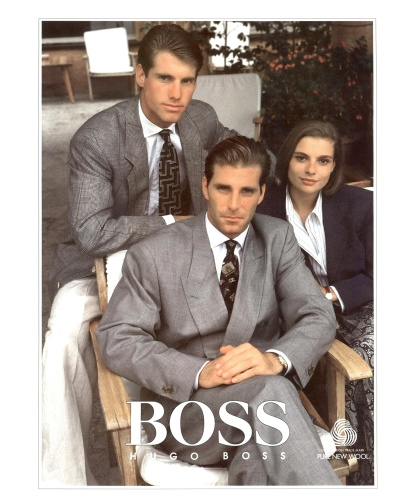
Named "the most beautiful male model in the world" by People Magazine in 1989, he set the golden standard for corporate masculinity across an iconic 11-year Hugo Boss run.

A world-class Olympic pole vaulter whose 100-foot Times Square billboard single-handedly birthed the multi-billion dollar luxury men's designer underwear industry.
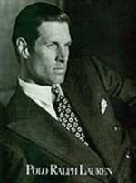
Discovered by Bruce Weber as a Pepperdine water polo captain, he shifted fashion photography into hyper-athletic masculinity and pioneered the term "male supermodel" in the early 1980s.
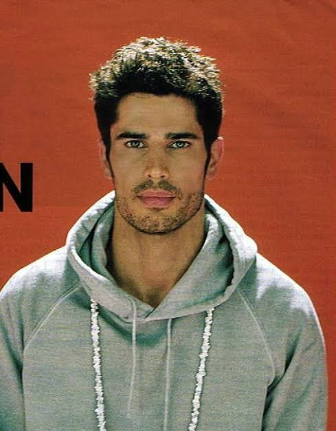
One of the most striking profiles of the 90s, he crossed into mainstream pop culture before walking away from high fashion to master ancient Ayurvedic healing as Yogi Cameron.
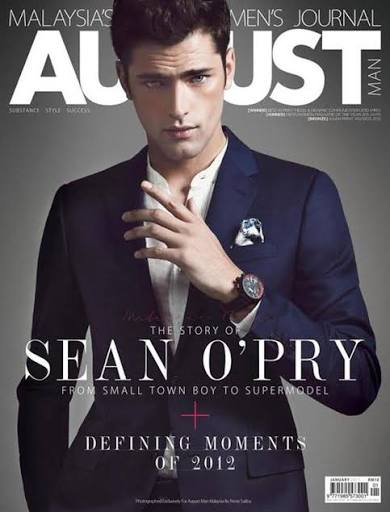
Discovered via MySpace prom photos, his signature hunter eyes and flawless facial harmony made him the highest-paid male model in history and a Guinness World Record holder.
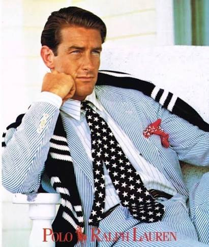
Handpicked by Bruce Weber while working at a Hollywood vintage shop after a stint as a British Merchant Seaman, he became the definitive patrician face of Ralph Lauren's Americana aesthetic for decades.
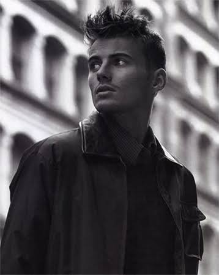
Handpicked by Bruce Weber after being spotted in an obscure publication, he dominated the 90s as a true male supermodel and MTV House of Style fixture alongside best friend Mark Vanderloo.
Revered for his distinct left-cheek scar and aristocratic poise, he held the global #1 spot on Models.com for over two consecutive years while anchoring luxury houses from Hermès to Calvin Klein.
Catapulted by Netflix's 365 Days franchise, he leveraged his brooding hyper-masculine aesthetic to become Dolce & Gabbana's principal muse and the subject of his own high-fashion art book, Bellissimo.
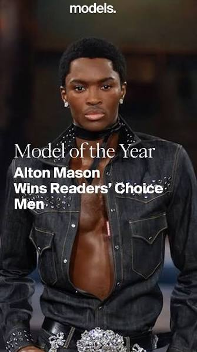
A trained dancer turned high-fashion icon, he made history as the first Black male model to walk a Chanel runway and earned five consecutive Models.com Model of the Year titles.
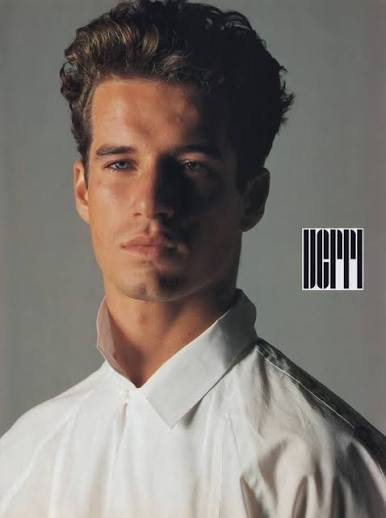
Discovered at 15 by Helmut Lang, he built a successful international career before transitioning behind the scenes in 1995 to found one of the industry's premier creative management empires.
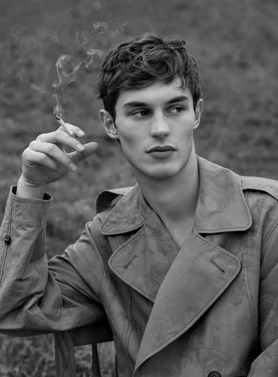
Scouted while driving a forklift in an airplane hangar, this former rugby player evolved into a premier runway force chosen by Demna for Balenciaga's highly anticipated return to couture.

Starting as a clean-shaven Abercrombie face, he grew his signature stubble into a global luxury frontman role for Giorgio Armani and Hugo Boss.
Discovered at 18 in Barcelona, he built a legendary career as Tom Ford's ultimate muse before pivoting to Hollywood with his breakout role in the Oscar-nominated film A Single Man.
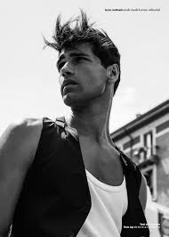
Personally selected by Giorgio Armani after being discovered on the streets of Milan, he became the first model to walk for the house for 15 consecutive years.
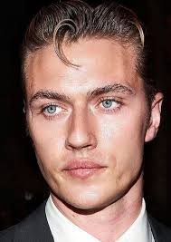
Scouted at age 10, his bleached hair and icy blue eyes catalyzed global street hysteria at fashion weeks, making him the blueprint of the social-media-driven male supermodel.
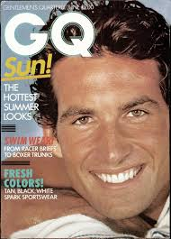
After shooting with Avedon and Penn across the globe, he bought a camera on location and spent the next two decades mastering photography behind the lens in New Mexico.
World Rankings
By Rank
Power Rankings